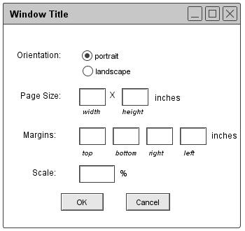

2.8.6. Print Preview and Print
Printing from the Scheduler is based strictly on the content visible in active schedule windows. Window content appears on the printed page exactly as it appears on the screen. "Exactly" means the content of the printed page is the same in appearance and absolute size as it appears on the screen. Scrolling lists and other scrollable components of the display are not expanded in the printed output. The printed content excludes the window banner, any bordering other than a single black line, and any content that is not visible within the window frame on the screen. This means there is no page numbering, header, footer, or other page labeling.
When the user selects the `Page Setup' command in the `File' menu, the system displays the dialog in Figure 110.

Figure 110: Page setup dialog
The `Orientation' setting defines the width-by-height orientation of pages. With the default selection of `portrait', pages are laid out with the width dimension running horizontally and the height dimension running vertically. When `landscape' is on, the width dimension runs vertically and the height dimension horizontally.
The `Page Size' values define the size of a page in inches. The `Margins' values define the unprintable area between the edge of the page and the edge of the printed content. When possible, the Scheduler queries the underlying operating environment to determine page size and margin settings for the currently selected printer. When such determination is made, the system inserts the values as the defaults in the page setup dialog. If the system cannot make this determination, the default width and height values are 8.5 and 11 inches, the default margins are all .5 inch.
The user can manually adjust the page size and margin settings to accommodate the paper size and margin requirements of different printers. In doing so, it is the user's responsibility to enter page size or margin values that can be accommodated on a particular printer, such that printed content is not cropped on the page.
The `Scale' setting defines the scale of the printed content relative to the printed page. The default is 100%.
When the user selects the `Print' command in the `File' menu, the system displays the dialog in Figure 111.

Figure 111: Print dialog
The user selects the printer to which output is directed from a list of available printers. When possible, the Scheduler queries the underlying operating environment to determine the identity of the user's preferred printer. When such determination is made, the system inserts the name of the printer as the default value in the `Printer' field. If the user's preferred printer cannot be determined, the field is blank.
The user can select to print the current window only, all windows of the current schedule.
The user may select the number of copies of each window to print, the default being 1. The `Collated' checkbox is enabled if the user selects more than 1 copy. If `Collated' is off (the default), the system prints all copies of the same window in immediate succession, before printing the next window. If the user turns `Collated' on, the system prints one copy of each window in succession before beginning the next copy of the each window.
When the user presses `OK' in the print dialog, the system proceeds with the printing. If a window fits on a single page based on the page setup parameters, the system prints the window centered on the page. The system does not print more than one window per page, even if more than one window could fit on a single page. If a window is too large to fit on one page, the system prints as much per page as possible, printing the multiple pages of the same window in row-wise order. The multiple pages of a single window are all left and top justified to the defined margins, not centered as for single-page windows.
There may well be additional functionality for page set up and printing in specific operating environments. This includes the ability to set other printer parameters, preview printed pages, and define other forms of page layout. Implementors must provide all such available functionality. Implementors are required to provide only generic page layout functionality, not content-specific layout. Contentwise, layout is at most one window per page, as described above.
Prev: save as
| Next: close project
| Up: functional
| Top: index